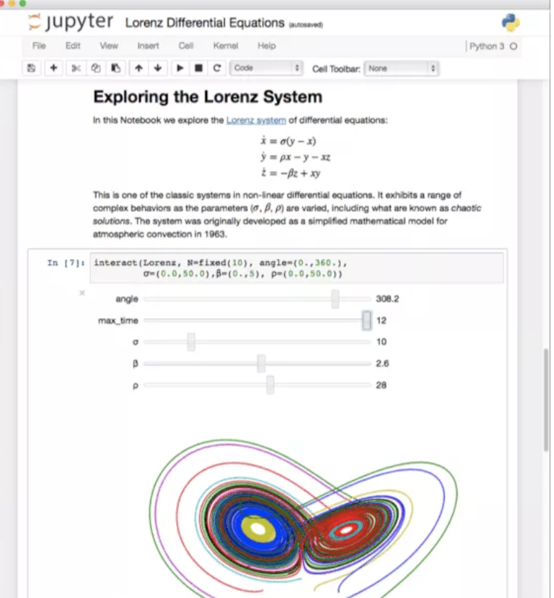

Programming toolkit
Contents
Programming toolkit#
This section contains an overview about the programming toolkit you will need for our course.
You will simply need to (we cover this topic in detail in the section “Tools”):
Install Anaconda (includes Python and some toolkits)
Install Visual Studio Code (a code editor)
Create an acount at GitHub (for software development and version control)
Please read all the instructions and complete the tasks listed in the following two sections (“Fundamentals” and “Tools”).
Note
If you aren’t familiar with the terminal, you may want to look at this short introduction
Fundamentals#
Python#
Python is an object-oriented language (an object is an entity that contains data along with associated metadata and/or functionality).
One thing that distinguishes Python from many other programming languages is that it is interpreted rather than compiled. This means that it is executed line by line which is particular useful for data analysis, as well as the creation of interactive, executable documents like Jupyter Notebooks.
Note
Python is an interpreted language. The Python interpreter runs a program by executing one statement at a time.
On top of this, there is a broad ecosystem of third-party tools and modules (like Jupyter Notebook) that offer more specialized data science functionality.
Jupyter Notebook#
Jupyter Notebook is an open-source application that allows you to create and share documents that contain code, equations, visualizations and narrative text.

{kind=link}
A notebook is basically a list of cells and the cells contain either
explanatory text (written in markdown)
executable code
code output
Note that we will use Jupyter Notebook inside the coding editor Visual Studio Code or Google Colab.
Colab#
Colaboratory, or “Colab” for short, is a free to use product from Google Research. Colab allows anybody to write and execute python code through the browser, and is especially well suited to perform data analysis and machine learning.
Note
Colab is a free Jupyter notebook environment that requires no setup, and runs entirely on the Cloud.
Watch this video to get a first impression of Colab:
Let`s start your first Colab notebook to get an overview about some basic features:
Markdown#
Markdown is one of the world’s most popular markup languages used in data science. Jupyter Notebooks use Markdown to provide an unified authoring framework for data science, combining code, its results, and commentary in Markdown.
Note
Markdown is a simple way to format text that looks great on any device.
According to Wickham and Grolemund [2016], Markdown files are designed to be used in three ways:
For communicating to decision makers, who want to focus on the conclusions, not the code behind the analysis.
For collaborating with other data scientists, who are interested in both your conclusions, and how you reached them (i.e. the code).
As an environment in which to do data science, as a modern day lab notebook where you can capture not only what you did, but also what you were thinking.
Review this sites to learn more about Markdown:
Tools#
Anaconda#
Basics#
The open-source Anaconda Individual Edition is one of the easiest ways to get started with data science projects. It already includes Python and the most important data science modules.
Note
Anaconda is a data science toolkit which already includes most of the data science modules we need.
Anaconda’s package manager conda makes it easy to manage multiple data environments that can be maintained and run separately without interference from each other (in so called virtual environments). conda analyses the current environment including everything currently installed, and, together with any version limitations specified (e.g. the user may wish to have TensorFlow version 2,0 or higher), works out how to install a compatible set of dependencies, and shows a warning if this cannot be done. Instead of conda, you can also use pip (the standard package installer for Python) to install packages. Note that you should only use either conda or pip in one environment (we usually use conda).
If you already have it#
If you already have Anaconda on your machine, make sure that you use the latest version (in our course, we use Python 3.9). In your terminal, type python --version to see which Python version you are using in your Anaconda base environment.
You may also uninstall your current Anaconda environment from your machine and install the latest version: here a guide of how to uninstall Anaconda.
Installation#
Install the latest version of the Anaconda Individual Edition:
To do
After you have installed Anaconda, you can update it. The following commands will update all packages in the default “base” environment to the latest version but will not update Python:
To do
On Windows open the Start menu and open an “Anaconda Command Prompt”.
On macOS or Linux open a terminal window.
In your terminal, type: conda update –all
Now follow the steps described in the next section.
Set up environment#
After you have installed and updated Anaconda, you can install the modules we need for our course in a new environment.
To do
Install GitHub course environments
Use the following course environment: env-ds.yml
Install or update Modules#
Take a look at all the modules in your environment:
conda list
Make sure that you use scikit-learn in version 1.0.2 or higher. If this is not the case, update Anaconda. If you only want to update specific modules, use conda update and the name of the module (e.g., scikit-learn)
conda update scikit-learn
If you want to install new modules in your environment, you should always use conda (and not the package installer for Python: pip). Here is an example of how to install scikit-learn see conda documentation
conda install scikit-learn
Or, if you want to install a specific version
conda install scikit-learn=1.0.2
Finally, take a look at the Anaconda Cheat Sheet which provides a list of useful commands.
Visual Studio Code#
Basics#
Visual Studio Code (also called Code) is a powerful source code editor which runs on your desktop and is available for Windows, macOS and Linux. It comes with a rich ecosystem of extensions for Python.
Note
Visual Studio Code is a code editor that can be used with a variety of programming languages including Python.
Installation#
Install VS Code:
To do
Install extensions#
The features that Visual Studio Code includes out-of-the-box are just the start. VS Code extensions let you add languages, debuggers, and tools to your installation to support your development workflow.
Let’s install some important extensions:
Jupyter Notebooks#
We usually work with Jupyter Notebook files in VS Code:
Optional tutorials#
Here some resources to get familiar with VS Code:
Troubleshooting#
If you have troubles to use Anaconda in Visual Studio Code, follow these instructions:
Git and GitHub#
GitHub is a provider of internet hosting for software development and version control using Git. We will use GitHub as a platform for web hosting and collaboration.
Note
Git is a version control system – like the “Track Changes” features from Microsoft Word with many more additional features.
Git can be used to store content
Code can be changed and other developers can add code in parallel.
Git has a remote repository which is stored in a server and a local repository which is stored in the computer of each developer.
You need a free GitHub-account for our course. Please follow the instructions below (in case you already have a GitHub account: please add your HdM-email address to your account):
To do
Verify your GitHub email
You may also sign up fot the free student developer pack
Install the VS Code GitHub extension
Install GitHub desktop to synchronize your machine with GitHub
Optional#
Miniforge#
As an alternative to Anaconda, you can also use the open-source project Miniforge.
Miniforge is a small, bootstrap version of the data science platform Anaconda that includes only Python, the open source package management system conda and a small number of other useful packages.
Miniforge also uses Anaconda’s package manager conda, which makes it easy to manage multiple data environments that can be maintained and run separately without interference from each other (in so called virtual environments).
Note
Miniforge is an community-led alternative to the data science platforms Anaconda and Miniconda, provided by Anaconda, Inc.
Compared to Anaconda, Miniforge provides more up-to-date packages, and is more user-friendly. Therefore, I recommend using Miniforge for data science projects.
Helpful#
Stackoverflow#
Stackoverflow is a public platform with a massive collection of coding questions & answers. So whenever you run into issues with your code, Stackoverlow is a great place to find answers!
Note
A community-based space to find and contribute answers to technical challenges.
The website serves as a platform for users to ask and answer questions, and, through membership and active participation, to vote questions and answers up or down similar to Reddit and edit questions and answers in a fashion similar to a wiki.
Command-line interface#
Operating systems like Windows and macOS implement a command-line interface (other names for the command line are: cmd, CLI, prompt, console or terminal) in a shell for interactive access to operating system functions or services.
Note
A command-line interface (CLI) processes commands to a computer program in the form of lines of text.
We sometimes use the command line interface so you should be familiar with basic commands. If you aren’t familiar with the terminal, read this short introduction to the command-line interface:
Here is a summary of some useful commands:
Command (Windows) |
Command (Mac OS / Linux) |
Description |
Example |
|---|---|---|---|
exit |
exit |
close the window |
exit |
cd |
cd |
change directory |
cd test, cd.. (Windows) or cd .. (Mac) |
cd |
pwd |
show the current directory |
cd (Windows) or pwd (Mac OS / Linux) |
dir |
ls |
list directories/files |
dir |
copy |
cp |
copy file |
copy c:\test\test.txt c:\windows\test.txt |
move |
mv |
move file |
move c:\test\test.txt c:\windows\test.txt |
mkdir |
mkdir |
create a new directory |
mkdir testdirectory |
rmdir (or del) |
rm |
delete a file |
del c:\test\test.txt |
rmdir /S |
rm -r |
delete a directory |
rm -r testdirectory |
[CMD] /? |
man [CMD] |
get help for a command |
cd /? (Windows) or man cd (Mac OS / Linux) |
Stay up to data#
To stay up to date in Data Science, take a look at these two free weekly newsletters featuring curated news, articles and jobs related to Data Science: